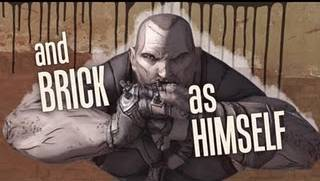
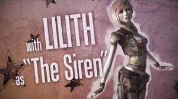
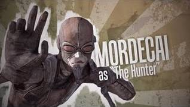
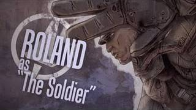

Playable Characters
In Borderlands you have four playable characters to pick from. Brick the Berserker, Lilith the Siren, Mordecai the Hunter, and Roland the Soldier. Any class can use any weapon in the game, but they each have their own special skills and abilities that favor certain weapon types over others. Each class is heavily customizable while still retaining their core gameplay patterns.
Berserker
Brick is a close range unit that excels with explosives, shotguns, and his own fists. His class ability is Berserk, which makes the screen tint red, he holsters his weapons, and pummels his enemies to death in melee combat. To survive melee combat his defences and health regeneration are increased dramatically. Many of the Berserker's talents allow him to become more tanky and resist more damage, so he is best played as a tank or close combat brawler.
Siren
Lilith is another close range unit, but one more suited to assassination and high burst damage than tanking and sustained brawling. Her class ability is Phasewalk, which allows her to turn invisible for short periods of time and she gains a movement speed boost. This allows her to weave in and out of combat while sustaining little damage. Upon entering and exiting her invisible state, she also creates an Area of Effect damage ability centered around her character. She can profitiently use any weapon, with elemental weapons giving the greatest damage increase of all, and he talents allow her to specialize in many different styles of assassination.
Hunter
Mordecai is a long range sniper unit. He can make use of other weapons, but his best talents lie in sniper rifles and pistols. His active ability, Bloodwing, summons a bird pet that can damage enemies. Bloodwing is not permanent and can only be summoned for specific periods of time. This time limit increases as his skill ranks up and with talents. Whether sniping from long range or optimizing the damage output of Bloodwing, Mordecai likes to stay far out of danger and let others take it for him.
Soldier
Roland is a bit of a jack of all trades. He has no specific weapon he excels with, and he has many abilities that provide support for a team instead of personal buffs. His active ability, Scorpio Turret, creates a sentry gun at the target location. The gun will fire against and damage enemies, and has a shield you and your allies can hide behind for protection. Based on your talent choices, Roland can provide another source of damage, a wide range of teamwide buffs, or a range of healing and regeneration abilities for you and your team mates. He is the most varied of the four classes but also the most powerful in co-operative play.